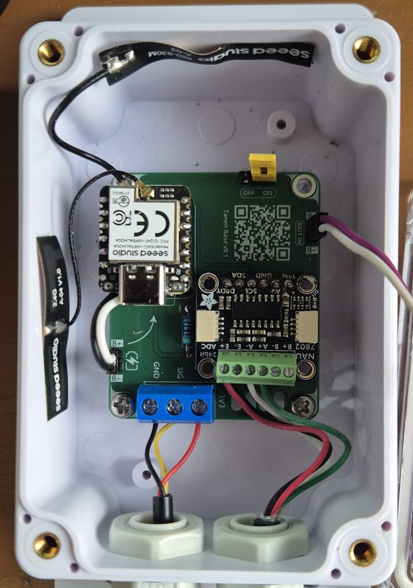
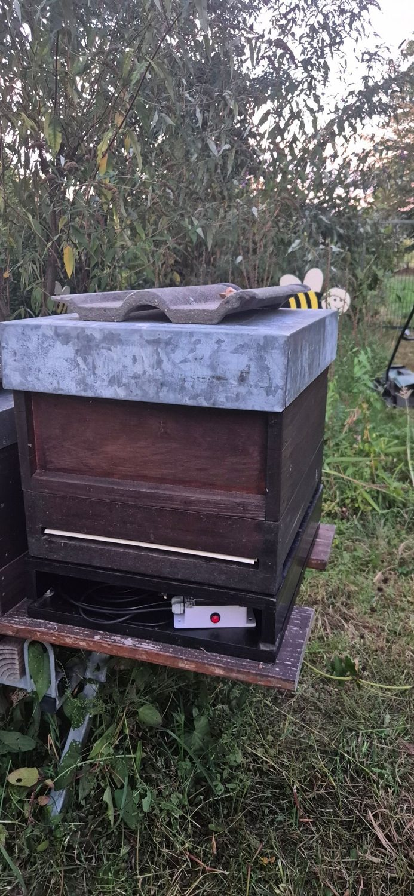
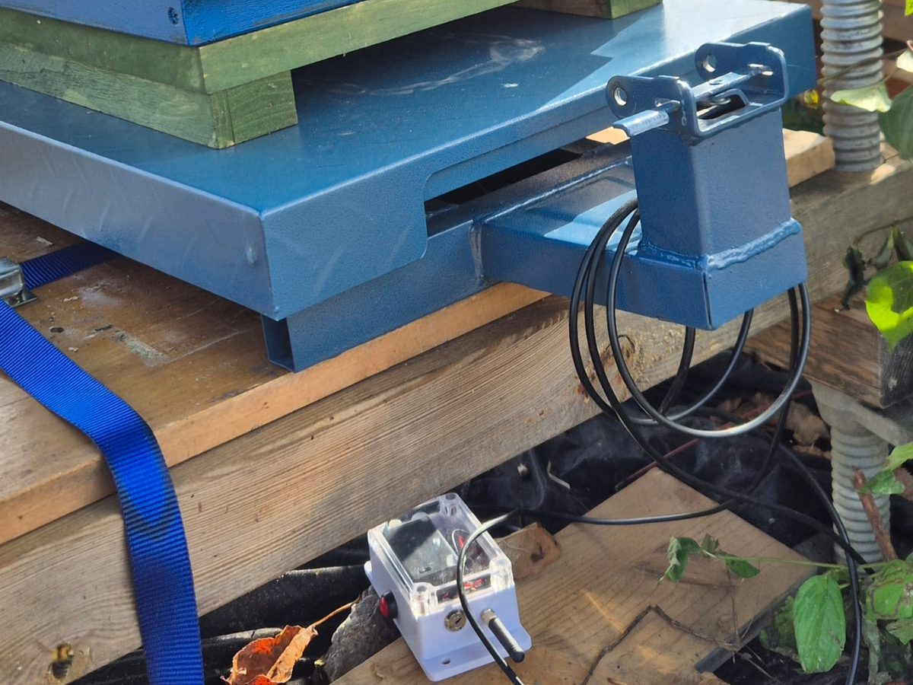
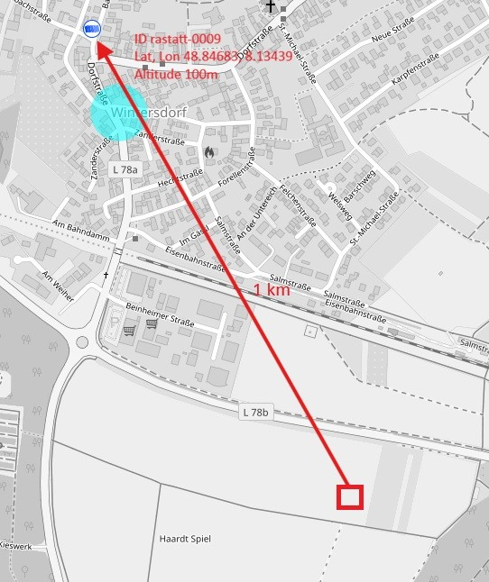

Seeed Studio
Seeed Studio stellt TanenBase in seinem Monatsrückblick für Juli 2026 vor: „Edge AI Beyond the Blueprint“.
Beitrag bei Seeed Studio lesenTanenBase wiegt den Stock, misst die Temperatur und schickt die Werte per Funk zu Ihnen.
Ein Batteriesatz reicht für Jahre. Kein Abo, keine Gebühr, kein Hersteller, der das Gerät eines Tages abschaltet.
Apache-Lizenz 2.0 — kostenlos nutzbar, auch gewerblich. Fragen an info@tanen.eu

Keine Zeichnungen, sondern Aufnahmen der Geräte, mit denen die Zahlen auf dieser Seite gemessen wurden.


Ein TanenBase unter einem Bienenstock in Bühl. Die Station funkt per LoRaWAN an ein Gateway auf der Burg Windeck, rund 4 km entfernt, und schickt jede Stunde einen Messwert.



Gewicht und Temperatur dieses Stocks, öffentlich bei beelogger und BEEP.
Der Verein hat TanenBase als einer der Ersten eingesetzt und dem Projekt damit den Weg aus der Werkstatt an den Bienenstand geebnet.
Ein Bienenvolk am Feldrand von Wintersdorf steht auf einer TanenBase-Stockwaage mit der Wiegeplattform Steinberg SBS-PF-150. Die Station funkt rund einen Kilometer weit zum re@di-Gateway im Ortskern.



Gewicht und Temperatur dieses Stocks, öffentlich bei beelogger und BEEP.
Bühl und Wintersdorf funken über das LoRaWAN-Netz von re@di, dem Verbund der Städte Baden-Baden, Bretten, Bruchsal, Bühl, Ettlingen, Gaggenau, Rastatt, Rheinstetten und Stutensee. Die Gateways stehen allen offen — ohne eigenes Empfangsgerät und ohne Mobilfunkvertrag.
Seeed Studio stellt TanenBase in seinem Monatsrückblick für Juli 2026 vor: „Edge AI Beyond the Blueprint“.
Beitrag bei Seeed Studio lesenDie Projektvorstellung von TanenBase auf LinkedIn.
Beitrag auf LinkedIn ansehenDrei Dinge, und die richtig: lange durchhalten, ehrlich messen, ohne fremde Hilfe funken.
Zwischen zwei Messungen ist das Gerät praktisch aus. Der Funksender wird nur eingeschaltet, wenn es wirklich etwas zu melden gibt — nicht nach der Uhr, sondern wenn sich Gewicht oder Temperatur deutlich geändert haben.
Jede Waage reagiert auf Wärme: Sonne am Nachmittag, kühle Nacht — und schon steht dort ein Kilo Tracht, das nie da war. TanenBase misst die Temperatur mit und rechnet diesen Fehler heraus.
Die Werte gehen über LoRaWAN heraus — eine Funkart für kleine Datenmengen über weite Strecken, ohne Mobilfunkvertrag. Sie stellen entweder ein eigenes Empfangsgerät auf oder nutzen ein offenes Netz wie The Things Network.
Bis zu drei kleine Bluetooth-Sensoren messen Temperatur und Luftfeuchte dort, wo es zählt: zwei im Bienenstock, einer draußen. Die Station liest sie ein und funkt ihre Werte zusammen mit dem Gewicht — ohne Kabel in den Stock und ohne zusätzliches Empfangsgerät für die Sensoren.
Temperatur und Feuchte im Brutnest zeigen, was die Waage allein nicht verrät: ob das Volk brütet, ob es im Winter seine Traube hält und ob sich Feuchtigkeit staut.

Die Waage funkt über The Things Network. Von dort gehen die Werte an eine Auswerteplattform, die daraus Kurven macht und Ihre Messreihen aufbewahrt. BEEP und beelogger sind kostenlos, fertig angebunden und im Feld erprobt; b.tree nimmt dieselben Werte über seine API an. Sie brauchen nichts zu programmieren.
Offene Plattform aus den Niederlanden. Gewicht, Temperatur und Batterie als Kurven, dazu ein digitales Stockbuch für jedes Volk. Konto anlegen, Gerätenummer vom Aufkleber eintragen — mehr ist nicht zu tun.
Imkerprojekt aus Deutschland mit eigenem Community-Server. Ihre Station meldet dort dieselben Werte; ein einziger Zugang trägt alle Waagen eines Standes, nicht eine Anmeldung je Gerät.
Stockkarten-Software aus Österreich, seit 2014. Die Werte kommen über einen Webhook aus The Things Network, mit denselben Schlüsseln wie bei BEEP; an der Waage ändert sich nichts. Die API ist eine kostenpflichtige Premium-Funktion von b.tree und speichert höchstens einen Messwert pro Stunde.
Alle drei Plattformen bekommen denselben Funkspruch, an der Waage ändert sich nichts. Nutzen Sie eine, mehrere parallel oder holen Sie die Werte auf Ihren eigenen Server — ohne uns zu fragen.
Stockwaagen gibt es zu kaufen. Nur führen die meisten in dieselben vier Sackgassen — und die haben nichts mit Bienen zu tun, sondern mit dem Geschäftsmodell.
Eine fertige Stockwaage kostet je nach Anbieter mehrere hundert Euro — und für jedes weitere Volk noch einmal dasselbe. Bezahlt wird nicht die Wägezelle, die ein Industrieteil für wenig Geld ist, sondern das geschlossene Drumherum.
Viele Geräte arbeiten nur mit laufendem Vertrag. Endet der Vertrag, schweigt die Waage und die alten Messreihen sind nicht mehr erreichbar — obwohl das Gerät auf Ihrem Grundstück steht und Ihnen gehört.
Stellt der Anbieter den Dienst ein oder verschwindet vom Markt, wird aus einwandfreier Technik Elektroschrott. Niemand außer dem Hersteller kann die Software erneuern, weil niemand sie kennt.
Wer jede Stunde funkt, egal ob sich etwas geändert hat, braucht jede Saison eine neue Batterie oder ein Solarpanel samt Halterung. Beides sind Wege zum Stand, die Sie sonst nicht gehen müssten.
Standardbauteile statt Sonderanfertigung, kein Vertrag, alles offen — und ein Gerät, das fast die ganze Zeit schläft.
Für alle, die es genau wissen wollen. Für den täglichen Gebrauch müssen Sie hier nichts verstehen.
| Messwerte | Gewicht, Temperatur im Stock, Batteriespannung |
|---|---|
| Bluetooth-Sensoren (optional) | bis zu 3 × SwitchBot Outdoor Meter: Temperatur und Luftfeuchte, 2 im Stock, 1 außen |
| Wiegebereich | bis 999 kg |
| Genauigkeit im Feldversuch | rund 12 g Streuung über sechs Tage |
| Funk | LoRaWAN Klasse A, EU868, OTAA |
| Datenpaket | 8 Byte je Meldung, dazu 5 Byte je Bluetooth-Sensor |
| Einrichtung | Bluetooth, Bedienseite im Browser (Chrome oder Edge) |
| Ruhestrom | rund 4 µA |
| Batterie | drei AAA-Lithiumzellen in Reihe (1,5 V, 1200 mAh) |
| Laufzeit (rechnerisch) | rund 4,5 Jahre — Messung alle 15 min, Meldung alle 2 h; rund 10 Jahre bei stündlicher Messung und 4-h-Meldung; mit Bluetooth-Sensoren rund 3,3 bzw. 7 Jahre |
| Rechner | Nordic nRF54LM20A, Zephyr / nRF Connect SDK |
| Lizenz | Apache-Lizenz 2.0 |
Offen heißt hier nicht, dass ein Datenblatt zum Herunterladen bereitliegt. Es heißt: Sie bekommen alles, was nötig ist, um das Gerät selbst zu bauen, zu prüfen, zu ändern und weiterzugeben.
Firmware, Schaltplan, Platinendaten, Aufbauanleitung und die vollständigen Messreihen der Temperaturkorrektur — samt der Stellen, an denen die Hardware schlecht abschneidet. Wer prüfen will, ob die Zahlen stimmen, kann es tun.
Das Gehäuse lässt sich öffnen, die Batterie ist eine gewöhnliche Zelle, die Bauteile sind einzeln zu bekommen. Für einen Tausch braucht es einen Schraubendreher und in seltenen Fällen einen Lötkolben, keine Rücksendung.
Die Station sendet an das Empfangsgerät oder das Netz, das Sie eintragen. Es gibt keinen Zwischenhändler, der mitliest, und keinen Dienst, dessen Fortbestand über Ihre Messreihen entscheidet.
Die Apache-Lizenz 2.0 erlaubt jedem, TanenBase zu nutzen, zu verändern und weiterzugeben — auch gewerblich, ohne Gebühr und ohne Erlaubnis einzuholen. Verbesserungen aus dem Imkerkreis fließen zurück ins Projekt.
TanenBase ist von der Open Source Hardware Association (OSHWA) als Open Source Hardware zertifiziert, UID DE000178. Die Zertifizierung bestätigt, dass Hardware-Design, Software und Dokumentation offen sind und nachgebaut werden können.
Viele selbstgebaute Stockwaagen laufen auf einem Arduino oder ESP32; TanenBase nutzt stattdessen einen Nordic nRF54LM20A mit Zephyr. Quellcode und Bauanleitung auf GitHub umfassen die Firmware, die KiCad-Trägerplatine mit Gerber-Dateien, die Stückliste mit Bezugsquellen, den TTN-Payload-Formatter und die Bluetooth-Einrichtungsseite. Die Bauteile:
Tanen_Base_pcb/TanenBase steht unter dem Bienenstock, wiegt ihn und misst die Temperatur im Stock. An der Gewichtskurve sehen Sie, wann die Tracht einsetzt und wie viel Futter das Volk im Winter verbraucht. Fällt das Gewicht plötzlich um mehr als die eingestellte Alarm-Grenze, etwa bei einem Schwarm, meldet sich die Station sofort, auch außerhalb der normalen Sendezeit.
Als LoRa-Stockwaage braucht TanenBase keinen Mobilfunkvertrag: Die LoRaWAN-Bienenstockwaage funkt über mehrere Kilometer bis zum nächsten Gateway, in Bühl sind es 3,6 km Luftlinie. Wo ein offenes Netz wie The Things Network oder re@di erreichbar ist, brauchen Sie kein eigenes Empfangsgerät. Von dort gehen die Werte kostenlos an BEEP oder beelogger, und Sie verfolgen Gewicht und Temperatur von zu Hause aus.
Zwischen zwei Messungen schläft die Station bei rund 4 µA und sendet nur, wenn sich Gewicht oder Temperatur deutlich ändern oder ein regelmäßiges Lebenszeichen fällig ist. So reichen drei AAA-Lithiumzellen rechnerisch rund 4,5 Jahre (Messung alle 15 min, Meldung alle 2 h). Die Temperaturkorrektur drückt die Schwankung im sechstägigen Feldversuch von 63 g auf rund 12 g. Eingerichtet wird per Bluetooth im Browser, ohne App; Firmware, Platinendaten und Messreihen stehen offen unter der Apache-Lizenz 2.0.
Ob Sie eine Station bauen wollen, bei den Bauteilen unsicher sind oder das Projekt in Ihrem Imkerverein einsetzen möchten — eine E-Mail oder WhatsApp-Nachricht genügt. Wir antworten auf Deutsch, Englisch und Arabisch.
info@tanen.eu